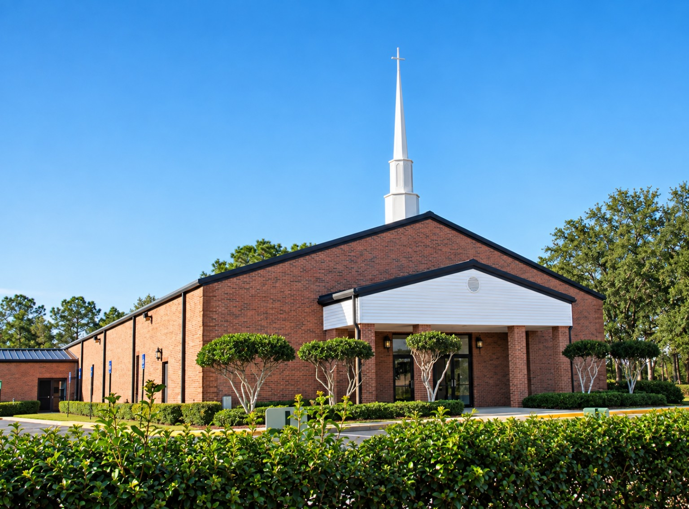

SUNDAY SCHOOL
9:30 AMA time to learn and grow together in God's Word.


“But they that wait upon the Lord
shall renew their strength...”
A time to learn and grow together in God's Word.
In-Person & Online
WATCH ONLINE →In-Person & Online
JOIN ONLINE →Retrieving upcoming events and announcements.